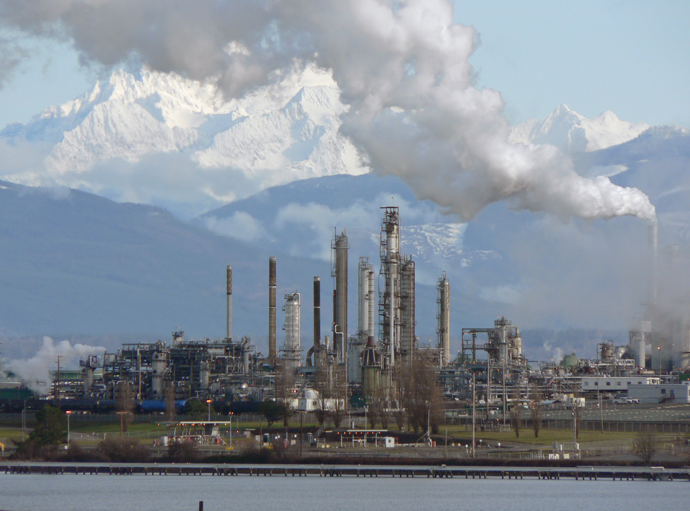

| Introduction | Extraction | Importance and Usage | Relevant Countries | Impacts | Bibliography |
Importance and Usage of Rare Earths
Rare earth minerals are of significant importance in modern society due to their unique properties and applications. These minerals are used in a wide range of high-tech products, including electronics, renewable energy technologies, defense systems, healthcare, and catalysis. Rare earth minerals are particularly important in the manufacture of permanent magnets, which are essential components in many electronic devices, including smartphones, laptops, and wind turbines. They are also critical to the production of renewable energy technologies, such as solar panels and electric vehicle batteries, which are key to reducing greenhouse gas emissions and addressing climate change.
In the defense industry, rare earth minerals are used in the manufacture of weapons systems, including missiles, communication, and radar systems. They are also used in healthcare, where they are essential components in the production of medical devices and pharmaceuticals. Rare earth minerals are used in catalysis, a process that accelerates chemical reactions, making them essential components in the production of energy-efficient lighting and other chemical processes.
The continued availability of rare earth minerals is essential to the ongoing development of high-tech products and the transition to a low-carbon economy. However, the mining and processing of rare earth minerals can have significant environmental impacts, including soil and water contamination. It is therefore essential that we invest in sustainable mining practices and explore alternative sources to ensure the continued availability of rare earth minerals while minimizing environmental damage.
Overall, the importance of rare earth minerals highlights the need for responsible and sustainable resource management to support the continued growth and development of modern society.
Rare earth minerals also play an essential role in the petroleum and oil refining industry. These minerals are used as catalysts in the refining process, where they help to convert crude oil into usable products such as gasoline, diesel, and jet fuel. Rare earth minerals are particularly effective in this application because of their unique electronic and chemical properties, which allow them to facilitate chemical reactions under the high temperatures and pressures of the refining process.
One of the primary uses of rare earth minerals in petroleum refining is in fluid catalytic cracking (FCC), a process that breaks down larger hydrocarbon molecules into smaller ones. The catalyst used in this process is typically a mixture of zeolites and rare earth minerals, which work together to break down the hydrocarbon molecules and create lighter, more valuable products.
Rare earth minerals are also used in other catalytic processes in petroleum refining, including hydrocracking, hydrotreating, and isomerization. These processes are essential for removing impurities from crude oil and creating high-quality products that meet industry standards.
Without rare earth minerals, the refining process would be much less efficient and more costly. The use of these minerals has enabled the petroleum and oil refining industry to produce a wide range of valuable products that are critical to modern society. However, the mining and processing of rare earth minerals can have significant environmental impacts, including soil and water contamination, and it is essential that we invest in sustainable mining practices to mitigate these risks.
Rare earth elements have a crucial role in the glass industry, where they are used as additives to modify the optical and physical properties of glass. Rare earth elements, such as cerium, lanthanum, and neodymium, are used in small amounts to enhance the performance of glass, making it more durable, transparent, and energy-efficient.
Cerium is the most widely used rare earth element in the glass industry, where it is used as a polishing agent for high-quality optical glass, such as lenses, mirrors, and prisms. Cerium oxide particles are added to the polishing slurry, which helps to remove scratches and imperfections, resulting in a smooth, transparent surface. Cerium is also used in the production of automotive glass, where it helps to reduce glare and improve visibility.
Lanthanum is another rare earth element used in the glass industry, where it is used as a refining agent for glass melts. Lanthanum oxide is added to the glass melt to improve the homogeneity and consistency of the glass, resulting in a higher quality product. Lanthanum is also used as a coloring agent for glass, producing a range of shades from light yellows to dark browns.
Neodymium is used in the production of high-performance glass, such as laser glass, where it enhances the optical properties of the glass. Neodymium-doped glass is used in solid-state lasers, which are widely used in medical, scientific, and industrial applications.
The importance of rare earth elements in the glass industry lies in their ability to modify the optical and physical properties of glass, making it more durable, transparent, and energy-efficient. Rare earth elements have enabled the production of high-quality glass products used in a wide range of applications, from lenses and mirrors to automotive and architectural glass. The continued availability of rare earth elements is essential to the ongoing development of high-performance glass products, and it is critical to invest in sustainable mining practices and explore alternative sources to ensure the continued availability of these essential elements.
Rare earth elements play a crucial role in the automotive industry, where they are used in various applications, including catalytic converters, lightweight materials, and electric vehicle motors. Rare earth elements, such as cerium, lanthanum, neodymium, and praseodymium, are essential for the production of high-performance vehicles, improving their fuel efficiency, performance, and sustainability.
Cerium and lanthanum are used as catalysts in the production of catalytic converters, which reduce the emissions of harmful gases from combustion engines. Cerium and lanthanum are used as oxygen storage components in the catalytic converter, which enables the converter to operate efficiently over a range of temperatures and oxygen concentrations.
Neodymium and praseodymium are used in the production of high-strength, lightweight magnets, which are critical components of electric vehicle motors. These magnets provide high torque and efficiency, enabling electric vehicles to operate at high speeds with a longer range. Neodymium and praseodymium are also used in regenerative braking systems, which enable the recovery of energy during braking and improve the overall efficiency of electric vehicles.
Rare earth elements are also used in the production of lightweight materials, such as aluminum and magnesium alloys, which are used in the manufacture of vehicle components. Rare earth elements, such as cerium, are added to these alloys to improve their strength, ductility, and corrosion resistance, enabling the production of lighter and more fuel-efficient vehicles.
The importance of rare earth elements in the automotive industry lies in their ability to improve the performance, efficiency, and sustainability of vehicles. Rare earth elements have enabled the production of high-performance vehicles, including electric and hybrid vehicles, which are essential for reducing greenhouse gas emissions and addressing climate change. The continued availability of rare earth elements is essential to the ongoing development of high-performance automotive technologies, and it is critical to invest in sustainable mining practices and explore alternative sources to ensure their continued availability.
Rare earth elements are of significant importance in the battery industry due to their unique properties that make them essential components of high-performance batteries. Rare earth elements, including neodymium, praseodymium, dysprosium, and terbium, are used in the manufacture of rechargeable batteries, particularly those used in electric vehicles and renewable energy storage systems.
Neodymium and praseodymium are used in the production of high-strength, lightweight magnets, which are key components in electric vehicle motors and wind turbines. These magnets are known as neodymium-iron-boron magnets and are the most powerful magnets currently available, providing high torque and efficiency. The demand for neodymium and praseodymium is expected to increase as the demand for electric vehicles and renewable energy technologies continues to grow.
Dysprosium and terbium are used in the production of nickel-metal hydride (NiMH) batteries, which are used in hybrid vehicles and some portable electronic devices. These rare earth elements improve the performance of NiMH batteries by increasing their energy density and reducing the risk of overheating.
Rare earth elements also have potential applications in next-generation battery technologies, such as solid-state batteries, which have the potential to offer higher energy densities, faster charging times, and improved safety. Rare earth elements, such as cerium, lanthanum, and yttrium, are being explored as potential additives in solid-state batteries to improve their conductivity and durability.
The importance of rare earth elements in the battery industry highlights the need for responsible and sustainable resource management to support the continued growth and development of high-performance battery technologies. The mining and processing of rare earth minerals can have significant environmental impacts, including soil and water contamination. It is, therefore, essential to invest in sustainable mining practices and explore alternative sources, such as recycling and urban mining, to ensure the continued availability of rare earth elements while minimizing environmental damage.
Overall, rare earth elements play a vital role in the battery industry, enabling the production of high-performance rechargeable batteries used in electric vehicles, renewable energy storage systems, and portable electronic devices. The continued availability of rare earth elements is essential to the ongoing development of high-performance battery technologies, which are key to reducing greenhouse gas emissions and addressing climate change.
Rare earth elements are used extensively in the light industry due to their unique optical properties, making them essential components in the production of lighting products, including energy-efficient lighting systems, displays, and electronic devices.
One of the most significant applications of rare earth elements in the light industry is in the production of energy-efficient lighting systems, including compact fluorescent lamps (CFLs) and light-emitting diodes (LEDs). Rare earth elements, such as europium, terbium, and yttrium, are used as phosphors in these lighting systems, which convert ultraviolet or blue light into visible light. The use of rare earth phosphors in energy-efficient lighting systems has enabled significant energy savings compared to traditional incandescent light bulbs, contributing to the reduction of greenhouse gas emissions and the mitigation of climate change.
Rare earth elements are also used in the production of display technologies, including liquid crystal displays (LCDs) and plasma displays. Europium and terbium are used as phosphors in the production of LCD displays, which are widely used in televisions, computers, and mobile devices. These phosphors enable the production of bright, high-resolution displays with low power consumption, contributing to the development of energy-efficient electronic devices.
Additionally, rare earth elements are used in the production of optical lenses, glass filters, and other optical components used in various applications, including cameras, telescopes, and laser systems. Rare earth elements, such as lanthanum and yttrium, are added to glass to improve its refractive index, which enables the production of lenses with higher optical performance.
In conclusion, rare earth elements are essential components in the light industry, enabling the production of energy-efficient lighting systems, displays, and optical components. The use of rare earth elements in the light industry has enabled significant energy savings and contributed to the development of sustainable technologies. However, the mining and processing of rare earth minerals can have significant environmental impacts, and it is, therefore, essential to invest in sustainable mining practices and explore alternative sources, such as recycling and urban mining, to ensure the continued availability of rare earth elements while minimizing environmental damage.
Electronics: Rare earth minerals are essential components in the production of electronic devices, including smartphones, tablets, and laptops. They are used in the manufacture of screens, magnets, and batteries, and they enhance the performance of these devices while reducing their size and weight. For example, the neodymium magnets found in many electronic devices are made from rare earth minerals and are essential to their function.
Renewable Energy: Rare earth minerals are critical to the production of renewable energy technologies, including wind turbines and solar panels. They are used to create the magnets and generators that convert wind and solar energy into electricity. Without rare earth minerals, the production of these technologies would be much less efficient and more costly. The use of rare earth minerals is, therefore, essential to achieving the transition to a low-carbon economy.
Defense: Rare earth minerals are also used extensively in the defense industry. They are essential components in the manufacture of weapons systems, including missiles, and are used in communication and radar systems. The military relies heavily on rare earth minerals, making them a critical component of national security.
Healthcare: Rare earth minerals also play a role in healthcare. They are used in the manufacture of medical devices such as MRI machines and X-ray machines, and in the production of pharmaceuticals, including cancer treatments and bone replacements. For example, the contrast agents used in MRI machines contain gadolinium, a rare earth mineral.
Catalysis: Rare earth minerals are also used in catalysis, the process of accelerating chemical reactions. They are used in a wide range of applications, including petroleum refining and the production of plastics and chemicals. Rare earth minerals are particularly useful in catalysis because they have unique electronic and chemical properties.